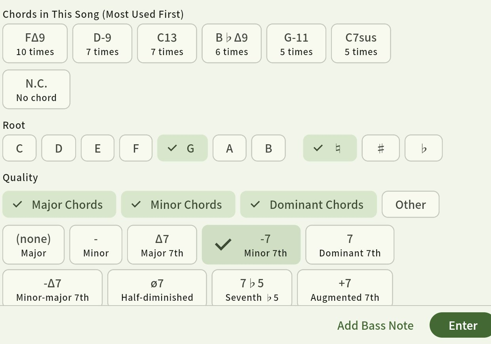
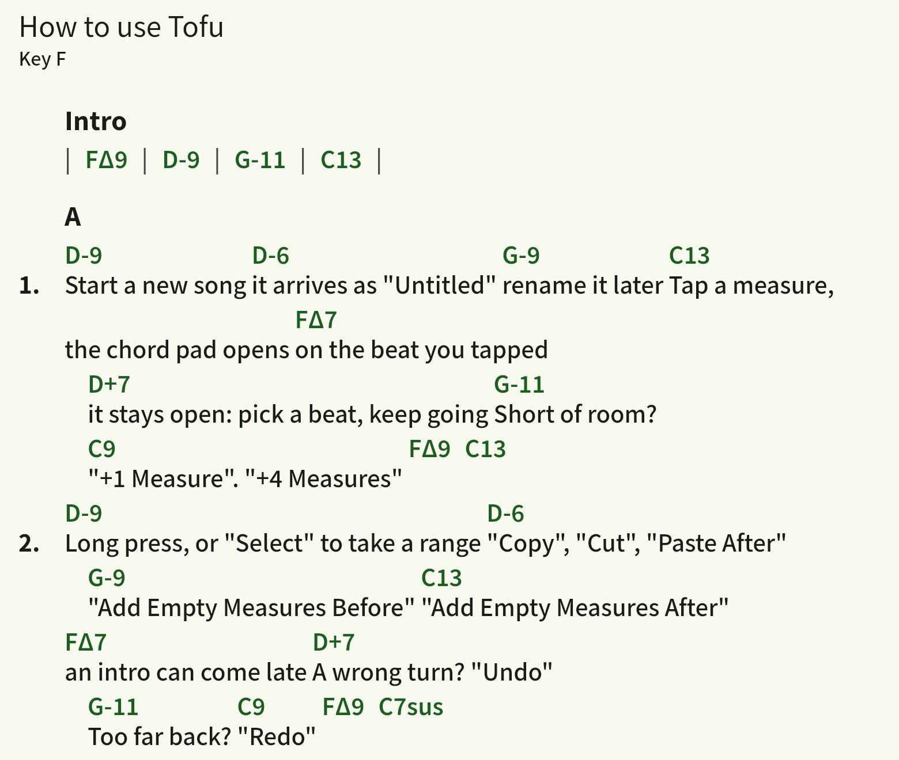
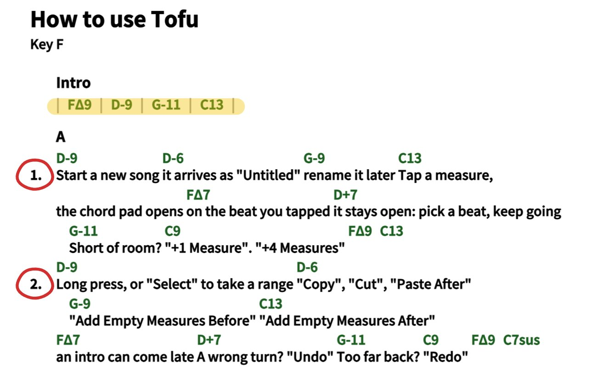
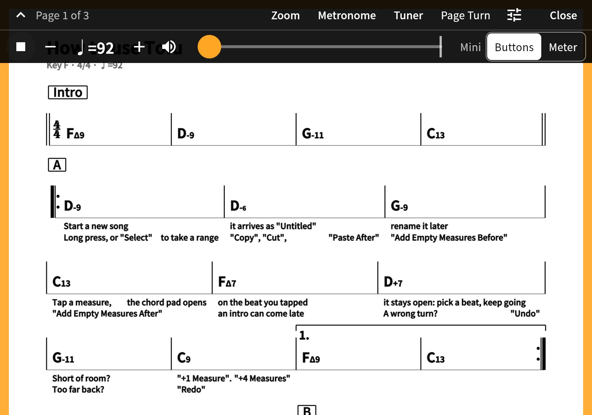

Make chord charts fast. Play from them right away.
An iPad app for chord charts, just chords and lyrics. There is no staff notation, so copying a song from your printed music is quick.
An iPad app for chord charts, just chords and lyrics. There is no staff notation, so copying a song from your printed music is quick.
Try changing the key with − and ＋.
The four bars transpose right here, a half step at a time. In the app, it is one tap too.




No account, no ads, no analytics. Your songs, PDFs and photos are stored only on your iPad.
View on the App Store